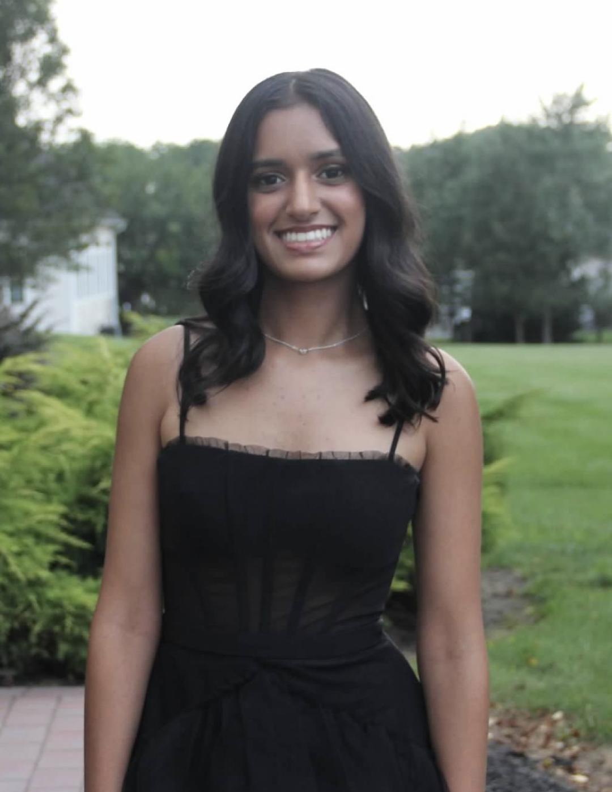

Hi, my name is Sonia Batheja
I am completing my freshman year this May at Carnegie Mellon University. I'm originally from New Jersey, where I grew up with my parents and my older sister, Sneha. When I was back home I loved spending time with my friends and I love to dance. I began with ballet and other American styles but then I began learning Bollywood and traditional Indian dance! Not only did I learn and compete in regional competitions, I also began teaching during high school. Now that I'm at CMU, I'm a part of the fusion Bollywood dance team: CMU Jiya and we will be going to nationals for the first time! The IS program at CMU was my first choice throughout high school and I'm so grateful to call this my school. Long term I really want to go into product management and I'm excited to see how CMU helps me achieve this goal!